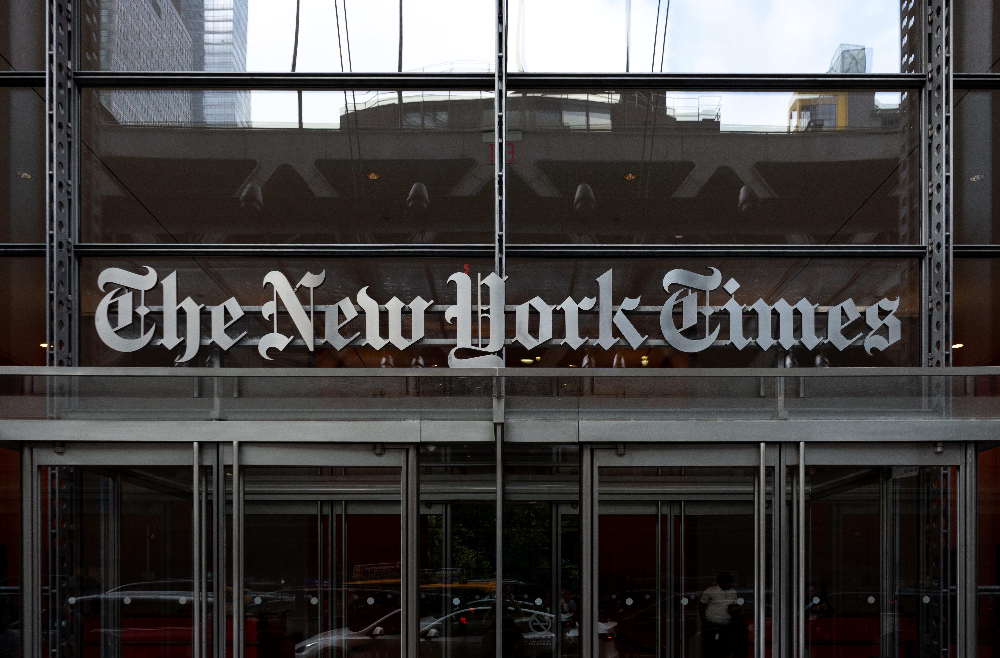

2 ноября 2026 года The New York Times подала иск против Brave Software — компании, которая делает браузер с встроенным блокировщиком рекламы и собственный поисковый индекс. Обвинения двух родов: во-первых, Brave скрапил статьи изданий для обучения ИИ; во-вторых, его функция Paywall blocker позволяла пользователям обходить платные подписки издателей, а в рекламе браузер открыто хвастался доступом к «сотням ведущих изданий». Параллельно отдельный иск подали New York Daily News, Chicago Tribune и Orlando Sentinel — их адвокат Стивен Либберман выразился предельно жёстко: «ИИ-гиганты боятся быть пойманными за воровством новостей, и Brave Software продаёт им чёрный ход к журналистике, на которую у них нет прав. Покупка ворованного вторыми руками не делает его легальным».
Сердщина претензий — Brave Index, собственный поисковый индекс компании. По версии истцов, Brave монетизировал его, продавая ИИ-компаниям платный доступ к «онлайн-контенту в реальном времени»: те использовали индекс и для обучения моделей, и для ответов на пользовательские запросы. В иске среди получателей «украденного защищённого авторским правом контента» названы Anthropic, Perplexity, Mistral, xAI и Cohere. «Brave никогда не просил разрешения издателей на доступ к их сайтам — тем более на копирование материалов и передачу их пользователям и ИИ-компаниям», — говорится в документе. Представитель NYT Грэм Джеймс добавил, что издание «неоднократно просило Brave прекратить нарушением, и он игнорировал».
Запросов журналистов Brave, Anthropic, Mistral и Cohere оставили без ответа — отдельного официального анонса или позиции компании на момент публикации материалов не было. Единственный, кто ответил, — Perplexity: пресс-секретарь Джесси Дуайер съязвил, что «NYT переплачивает юристам и недоплачивает журналистам». Сам текст иска открыт: жалоба NYT опубликована на сайте компании, полная версия — в реестре федерального суда CourtListener.
Brave и медиа воюют не впервые: в 2025 году сам Brave подал в суд на News Corp (Wall Street Journal, New York Post), а в июле 2026-го News Corp ответила встречным иском за перепродажу её статей ИИ-фирмам. Теперь очередь крупных изданий — и это первый случай, когда иск к браузеру-посреднику подан напрямую, минуя самих разработчиков моделей. Показательно, что буквально накануне Google, OpenAI, Microsoft и Anthropic договорились о едином стандарте отказа от обучения ИИ в robots.txt: индустрия всё отчётливее переходит от «скрапим всё» к согласованному сбору — а суды теперь будут решать, что делать с теми, кто собирал иначе.
Иск смещает фронт авторско-технических войн с разработчиков моделей на инфраструктуру: поисковые индексы, браузеры и «агрегаторы контента для ИИ» впервые отвечают по авторскому праву как распространители. Если истцы добьются успеха, модель «проиндексируем весь интернет и продадим доступ ИИ-компаниям» станет юридически токсичной для любого не-Google поиска — а таких, кроме Brave, немного.